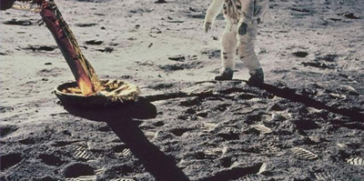

NASA骗局：人类其实没有成功登月!
作者：噗韬君 | 2019.3.22 19:03
1969年，阿波罗11号前往月球探索考察，阿姆斯特朗成为了第一个踏上月球的宇航员，也是第一个在地球外星体上留下脚印的人类成员。在1961年到1972年的这十一年里，美国对月球进行了六次的探索成功五次，这个耗资巨大“劳民伤财”的工程无疑是人类向宇宙进行探索的重大一步。但是在随后的几十年里，对登月真实性进行质疑的人们越来越多，美国登月成功究竟是一个巨大的骗局还是阴谋者的空穴来风呢？
在众多的疑点中最让人怀疑的就是在当时电视直播时飘动的旗帜，宇航员插在月球表面的旗帜展开并且颤动着，似乎有自然风的吹过。然而大家都知道月球是没有大气层的整个表面都在真空中，所以不可能形成风，NASA的解释是旗帜在拿出来之前的连锁反应就让旗帜呈现出了展开的状态。
月球上可没有什么灯光，它只有一个光源那就是太阳这使得在月球上所有东西的影子都是平行的，但是在视频和照片中都可以观察到影子方向的不同，有人怀疑这是在电影片场的地方进行的拍摄。因为只有那样才会营造出如此复杂的环境光，NASA将这些杂乱的光影归咎于月球上复杂的地形，这个说法难以让人信服地形还可以造成巨大的角度差？
大家都明白从地球飞向宇宙需要巨大的动力支持需要的就是燃料储备，不管是国内的火箭还是美国的航天飞机在发射时滚滚的烟雾和火苗都让人感叹，但是是飞到月球的人是怎么返回的呢？虽然月球的重力只有地球的1/6但是想要摆脱月心引力的控制并不是容易的事情。而在返回地球时大气层的摩擦以及重力加速度都是需要考虑的地方，仅仅依靠小小的返回舱会不会有些难以解释。
除此之外，在照片中看不到星星、消失的飞行器着陆坑、不同照片中重复的背景等都是质疑登月骗局的人们怀疑的地方，那NASA官方就给不出一点有力的证明吗？当然是有的，数次登月留下的“垃圾”就是登月的有力证明，通过天文望远镜甚至可以观察到宇航员行走的痕迹，还有就是被放置在月球上的激光反射镜用来反射从地球发出的激光做实验。
还有人提出宇航员只是到了月球附近而没有到达表面，为了在与苏联的冷战中取得先机不得不撒谎，甚至还有美国与外星人联系的说法...在时间长河中很多事情变得扑朔迷离，美国登月的真相到底是什么，你是如何认为的呢？
下载 APP 即可回复/评论，快来分享自己的看法吧！